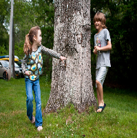

Tikkertje

Informatie van spel
Tikkertje is een klassiek en actief buitenspel dat je met 3 tot oneindig veel spelers kunt spelen.
Het is een eenvoudig spel met makkelijke regels, ideaal voor kinderen en gezinnen.
In Tikkertje is één speler de tikker en probeert hij de andere spelers aan te tikken.
Degene die getikt wordt, wordt de nieuwe tikker en het spel gaat door!
Het spel kan zo kort of lang duren als de spelers willen.
Er zijn verschillende varianten, zoals “buutvrij” of “standbeeldtikkertje,” om het extra leuk te maken.
Tikkertje is gratis en geschikt voor alle leeftijden.